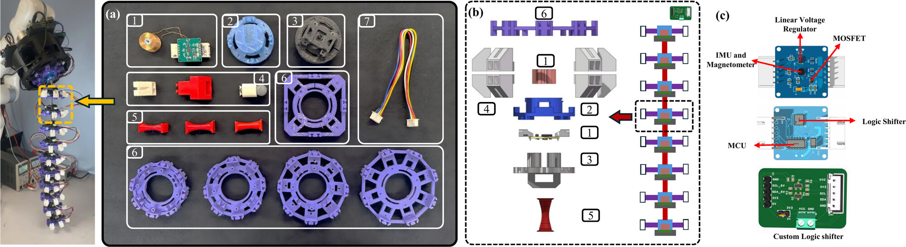
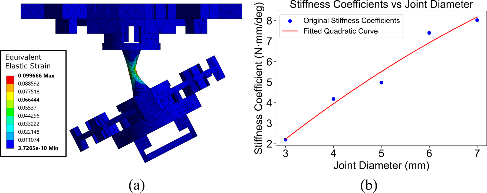

Carnegie Mellon University
*Equal contribution
Accepted to IROS 2026 · IEEE/RSJ International Conference on Intelligent Robots and Systems
Continuum robots enable smooth shape morphing and safe interaction in confined environments. However, most existing systems are task-specific and depend on external sensing infrastructure, limiting their adaptability and real-world deployment. This paper presents a self-contained modular continuum robotic platform that combines mechanical reconfigurability with onboard pose estimation. The robot is constructed from interchangeable continuum joints with analytically precomputed stiffness, allowing rapid assembly and direct programming of the robot shape. Proprioceptive sensing is achieved using magnetic sensors and a modular learning-based framework, where a single model is trained per joint and reused across configurations. The system is experimentally validated in real world, demonstrating self-sensing capabilities and adaptation without external tracking.
Experimental validation: obstacle traversal with variable-stiffness joints, grasping a soft sphere with compliant high-friction stoppers, and grasping a flexible sheet with alternative limb/ring attachments. Each clip shows the real experiment next to the onboard pose estimate.
The robot is a chain of identical rigid core segments, 3D printed in carbon-fiber-reinforced PET, connected by compliant 3D-printed TPU joints. Each core houses the sensing electronics and has dovetail features for the joint and outer slots for interchangeable PLA rings, whose size and geometry can be tailored to the task (for instance with high-friction studs for gripping). No threaded fasteners are needed: segments are assembled, swapped and taken apart by hand without tools. The study uses 8- and 10-segment robots driven by servo-actuated tendons.

Every joint is a simple hourglass whose bending stiffness is governed mainly by its minimum neck diameter. Mixing joints of different necks along the body produces shapes with non-uniform curvature: in the teaser above, a "high", a "medium" and a "low" stiffness section let the robot reach around an obstacle and touch a switch. Stiffness was characterised with geometrically nonlinear finite-element studies in ANSYS (material data from uniaxial tension tests comparable to ASTM D412): a segment is bent to 30° and the reaction moment \(M\) is fitted against bend angle \(\theta\) as
$$ M = k\,\theta . $$Across neck diameters of 3 to 7 mm the fitted stiffness rises from roughly 2 to 8 N·mm/deg, and a quadratic fit of that trend lets a designer pick the neck diameter that gives a required bending stiffness.

Each segment carries a custom PCB with an ATtiny3224 microcontroller, an ICM-20948 9-DoF IMU (whose magnetometer is the sensing element), a TPS72118 low-dropout regulator, an SN74AXC4T774 level shifter for the IMU's 1.8 V logic, and a diode plus N-channel MOSFET that switches the segment's coil (12 mm tall, 19 mm diameter, 27 AWG). The microcontroller bridges SPI to the IMU and I²C to an Arduino MEGA; boards are daisy-chained with 5-pin JST XH connectors carrying power and the I²C bus, and a second custom BSS138 level-shifter board joins the 5 V MEGA to the 3.3 V chain. The MEGA streams readings to a Raspberry Pi, which runs the pose inference.
The magnetic pose-estimation method, its training pipeline and the experimental results are described in the paper; the released code below implements them.
Everything needed to build and run the sensing pipeline is released at github.com/ansue1234/ModTenV1 under the MIT license:
firmware/segment/ — ATtiny3224 firmware for every segmentfirmware/base_controller/ — Arduino MEGA coil sequencer for deploymentfirmware/data_collection_rig/ — two-segment training-rig sketchdata_collection/ — rig driver and dataset preparationtraining/ — train, evaluate, ONNX export, convention check, paper hyper-parametersros_ws/ — ROS 2 Humble pose_estimator package, Docker setup and the pretrained modelThe mechanical design files (CAD for the segments, joints, rings and stoppers) are available at tinyurl.com/ModTenV1.
@inproceedings{sue2026tendon,
title = {Tendon-Driven Continuum Robot with Modular Stiffness and In-Situ Self Pose Estimation},
author = {Sue, Guo Ning and Cao, Zheng and Hu, Junzhe and Bu, Xiangyun and Quinn, David and
Wu, Tiancheng and Erickson, Zackory and Majidi, Carmel},
booktitle = {IEEE/RSJ International Conference on Intelligent Robots and Systems (IROS)},
year = {2026},
note = {arXiv:2609.16256}
}